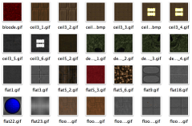

A free FPS action game
The Freedoom project aims to create a complete free content first person shooter game. But Freedoom by itself is just the raw material for a game: it must be paired with a compatible game engine to be played. The download page lists some recommended ones.
id Software released the source code to their classic game, Doom, under the GNU General Public License. This means that the program code that powers Doom is free; Freedoom complements this with free levels, artwork, sound effects and music to make a completely free game.
Freedoom is actually three games in one, consisting of two single player campaigns and one set of levels intended for multiplayer deathmatch (FreeDM).
A compatible free replacement
There is a massive decades-long back catalog containing thousands of Doom levels and other “mods” made by fans of the original game. Freedoom aims to be compatible with these and allows most to be played without the need to use non-free software. The video to the right shows a Doom mod running under Freedoom.
Just as the GNU project was started to develop a free operating system to replace Unix, we aim to provide a free replacement for Doom. If you have artistic skills (visual, musical, or maybe you just like making levels!) then you can help us achieve that aim by contributing to the project!
A collection of reusable artwork

Freedoom contains hundreds of original textures, sound effects and music tracks that can be reused royalty-free by Doom level authors and other independent game developers.
Freedoom is liberally licensed under the BSD license - all that is required is that you include a short copyright statement that credits the Freedoom project.
Copyright 2001 - by contributors of the Freedoom project. Freedoom and this website is licensed under an open-license. We have an RSS feed that you can follow.